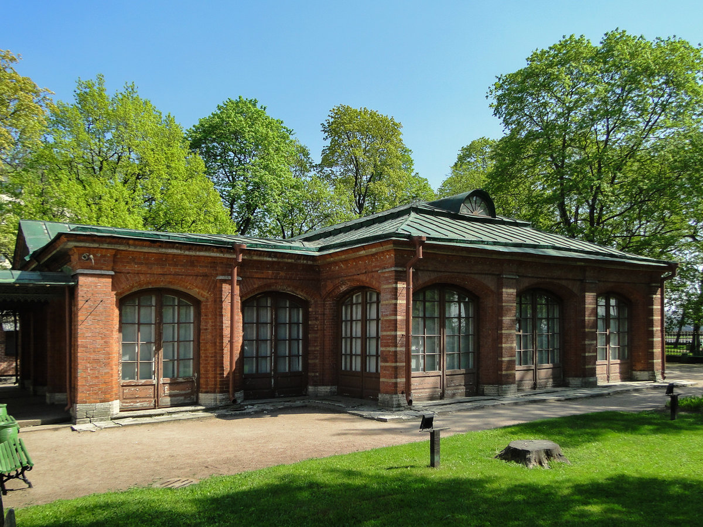
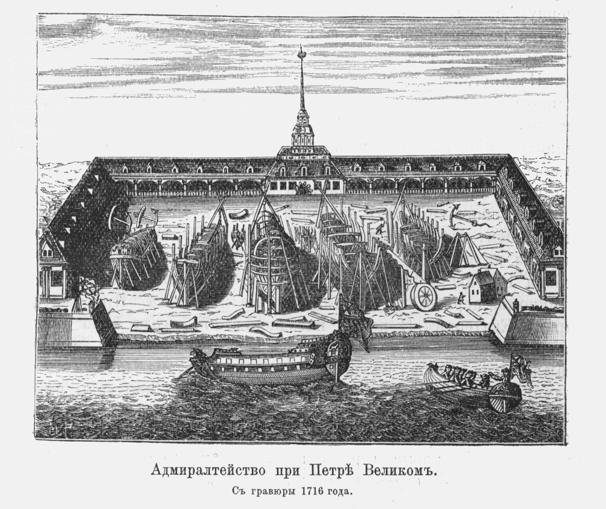
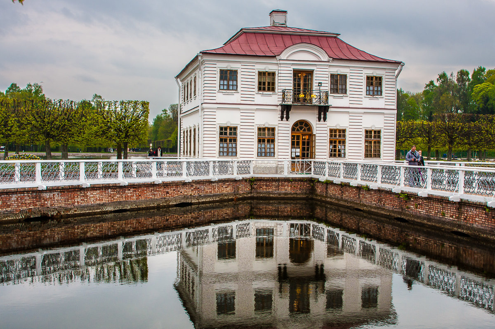

Правитель взял заступ, вышел на открытое место, где заметил летающего орла. Петр срубил березы и поставил их в яму. Орел сел на верхушки деревьев. Петр связал его лапы и посадил птицу к себе на плечо. Согласно легенде, с тех пор орел всегда был с Петром.
Таким и было основание Санкт-Петербурга. Его датой принято считать 16 мая 1703 года - в этот день император начал строительство крепости, позже названной Петропавловской (в честь апостолов Петра и Павла). Сначала она именовалась «Санктпитербурх», что и легло в основу наречения целого города в дальнейшем.

План Петропавловской крепости 1703 года

Петропавловская крепость в наши дни
История не сохранила документов о названии Санкт-Петербурга. Современники, окружавшие Петра, называли город по-разному. Самому императору нравилось название Ниеншанц — по имени крепости. В первой половине XVIII века существовало более 30 вариантов названий города. Сегодня как только ни называют город Петра - Северная столица, Культурная столица, Питер, Город на Неве, Город белых ночей, Петрополь, Питер, СПб, Северная Пальмира, Северная Венеция.
Новый город задумывался Петром как порт, сооруженный на отвоеванных территориях. Царь поставил цель перебросить сюда поток морских грузов из Архангельска. Осенью 1703 года в гавань Петербурга вошел первый корабль из-за рубежа. Прибытие судна торжественно отметили, а экипаж щедро наградили.
Первой гражданской постройкой в Санкт-Петербурге стал дом его основателя, который сколотили за три дня напротив того самого первого строения — Петропавловской крепости.
Здание получило название "Первоначальный дворец Петра Первого". Его построили по старинным русским образцам — на две светлицы, соединенные между собой сенями. Бревна снаружи обтесали, сделали плоскими, окрасили масляной краской и расписали под кирпич. Окна прорубили широкие, по голландскому образцу.
Этот скромный деревянный домик до сих пор стоит и охраняется все века существования Петербурга как величайшая реликвия — его специально облачили в каменный футляр, чтобы защитить от непогоды и прочих неблагоприятных факторов. Это единственная сохранившаяся в Петербурге деревянная постройка начала XVIII века.
Весной 1704-го крепость приобрела вид неправильного шестиугольника. Затем Петр решил рядом отстроить гавань для кораблей, продовольственные и военные склады, казармы для солдат и офицерские дома. Царь приказал в первую очередь закладывать здания, необходимые для нужд армии.
По плану государя новый город должен был стать центром судоходства и кораблестроения. 5 ноября 1704 года началось строительство Адмиралтейства, или Адмиралтейской крепости, ставшей главной судостроительной верфью России на Балтике. Чертежи крепости также разрабатывал Петр Алексеевич. По его задумке, шпили Петропавловской крепости и Адмиралтейства должны были стать доминантами в панораме будущего города, который он хотел превратить в новую столицу государства.
Несмотря на трудности, дела по строительству верфи успешно продвигались вперёд. Уже в октябре 1705 года на территории Адмиралтейства выросли деревянные и мазанковые строения, обнесённые со стороны реки валом с пятью бастионами. Лишь в 1716 году эти незначительные укрепления заменили настоящей крепостью. Как крепость Адмиралтейство просуществовало до 1820 года, в качестве судостроительной верфи –до 1844 года.
Меншиковский дворец стал первым каменным зданием в новой российской столице. Его строительство длилось четыре года и было завершено к 1714 году. Проект дворца создали архитекторы Джованни Мария Фонтана и Готфрид Иоганн Шедель. Это трехэтажное здание с мансардой долго было одним из самых роскошных в Петербурге. Здесь проводились торжественные обеды царской семьи и даже свадьбы — царевича Алексея с немецкой принцессой Шарлоттой Софией и Анны Иоанновны с Фридрихом Вильгельмом, герцогом Курляндским.
С дворцом связана городская легенда: Александр Меншиков, первый губернатор Санкт-Петербурга, должен был заплатить Петру двести тысяч рублей штрафа. Для того чтобы погасить этот долг, он продал кое-что из обстановки своего дворца. Петр Меншикова пристыдил: «В первый твой приемный день если найду здесь такую же бедность, не соответствующую твоему званию, то заставлю тебя заплатить еще двести тысяч рублей». Меншиков волю царя исполнил, и его дом снова засиял богатым убранством.

Меншиковский дворец 1714 года

Меншиковский дворец в наши дни
Летний дворец Петра I, построенный в 1710–1714 годах, был образцом для строительства домов «зело именитых» особ. Разве что отделка фасада и внутренняя планировка отличала царский дворец от домов его сановников.
Двухэтажное каменное здание было построено на голландский манер по проекту Доменико Трезини. Фасады здания выглядят изысканно — их украшают терракотовые барельефы — иллюстрации сражений в Северной войне, выполненные Андреасом Шлютером. Внутренняя планировка дворца отличается простотой — в нем всего четырнадцать небольших комнат и две кухни. Современники находили дворец неподходящим для царской резиденции, один из послов назвал его «жалким домом, нисколько не соразмерным со всем остальным». По его словам, Летний дворец был «до того тесный, что зажиточный дворянин, наверное, не захотел бы поместиться в нем». После смерти Петра во дворце жили как члены императорской семьи, так и царские сановники.

Летний дворец Петра Первого
Литейная часть, Литейный проспект, Литейный мост... Всё отсылает нас к петровским временам, когда здесь был размещён пушечный Литейный двор, давший жизнь и всей "зафонтанной" приневской части города. В старину называли её Московской стороной Петербурга.
Литейный "анбар" быстро обрастал разными техническими предприятиями. Были выстроены: кузница, слесарная, лафетная, товарная, столярная, паяльная и другие мастерские и, кроме того, целый ряд служб, сараев и т.п. Все эти здания получили в своей совокупности название "Литейного двора". Двор был расположен на самом берегу Невы, на месте нынешнего въезда на Литейный мост.
Место на "Литейной першпективе", где ныне находится здание Управления ФСБ, служило с 1714 г. складом всех необходимых для производства нового завода материалов и припасов, а также местом хранения готовой продукции этого завода. Место это получило название "Пушечного двора". Напротив него через "Литейную першпективу" сосредоточились к 1715 году все основные мастерские литейного завода; здесь же расположилось здание "Артиллерийской канцелярии". Место это получило название "Нового пушечного двора", а прежний Пушечный двор стал называться "Старым пушечным двором". Новый Пушечный двор, постепенно расширяясь, захватил всю территорию в глубь от "Литейной першпективы" до реки Фонтанки.

Литейный двор 1711 год
Петропавловский собор, строительство которого началось в 1712 году на месте одноименной деревянной церкви 1703 года, долгое время был самым высоким зданием России. Высота колокольни, с которой и было начато строительство, составляла 122,5 метра. При этом, как гласит легенда, шпиль колокольни Петр распорядился возвести над тем местом, где был похоронен царевич Алексей, «дабы крамола никогда не восстала из земли и не распространилась по Руси» (царевича Алексея, сына Петра I, обвиняли в государственной измене). Петропавловский собор сильно отличается от традиционных русских храмов: это вытянутое в плане здание с очень сдержанными фасадами, которые оформляют только плоские колонны — пилястры и наличники с херувимами. Петропавловский собор стал первым российским храмом, построенным в тенденциях западноевропейской архитектуры.

Петропавловский собор
Александро-Невская лавра была заложена еще в 1710 году на том месте, где Александр Невский одержал победу над шведами. Эта символичность была очень важна для Петра — Москве с ее Георгием Победоносцем надо было что-то противопоставить, а будущую обитель он видел главным русским монастырем. На сегодняшний день самой старой церковью в монастыре, вокруг которой и строилась обитель, является Благовещенская (1717–1724). Автором проекта стал Доменико Трезини. Он построил прямоугольное в плане здание, фасад которого сдержанно украшен пилястрами и лепниной. Завершает храм граненый купол, установленный на световом фонаре. Впоследствии в этой церкви были захоронены члены императорской фамилии и царские сановники.

Петр I после поездки в Голландию и Англию вдохновился идеей создания собственного кабинета редкостей, или на немецкий манер — кунсткамеры. Он планомерно закупал как отдельные предметы, так и целые коллекции. В скором времени это собрание потребовало отдельного здания.
По преданию, место для строительства музея лично выбрал Петр I. Он увидел необычную сосну: «Отрубок сей достоин примечания по находящемуся в нем суку толщиною в дебелую человеческую руку, который, выросши из одного места и нагибаясь полукружием, наконец врос в другое расстоянием на 1 аршин и 10 вершков от своего исходища». Петр сказал: «Где нашел я сие любопытное дерево, тут да будет и Кунсткамера построена». Первые эскизы музея были сделаны Андреасом Шлютером, а после его смерти доработаны Георгом Маттарнови. Петр был так заинтересован в строительстве Кунсткамеры, что жертвовал на него так называемые кабинетные (то есть свои личные) средства. До середины XIX века в башне Кунсткамеры размещалась и первая в России астрономическая обсерватория. На вершине башни сначала планировали сделать флюгер, но потом было решено установить там армиллярную сферу, представляющую модель солнечной системы.

Кунсткамера
Палаты Кикина — один из старейших частных домов Петербурга. Свое название он получил по имени первого владельца — Александра Кикина, соратника Петра I. Его положение при дворе позволило построить роскошный дом, чем-то напоминающий Большой дворец в Петергофе. После того как Кикин, обвиненный в государственной измене, был казнен, в палатах разместили тогда не имевшую своего здания личную библиотеку царя.
При Кикине палаты были одноэтажными, позже был надстроен второй этаж. В 1733 году, когда рядом появились казармы для полка Конной гвардии, в палатах разместились лазарет и канцелярия. Большой зал переделали в полковую церковь — в средней части палат появилась деревянная колокольня с куполом и крестом. В XIX веке здание еще неоднократно перестраивалось. Сейчас же палаты выглядят так же, как и при Кикине, — после окончания войны здание, сильно пострадавшее от обстрелов, реконструировали в формах петровского барокко.

Кикины палаты
Петр I был известен своей невзыскательностью и порой даже презрением к роскоши, поэтому его дворец в Петергофе, получивший название «Монплезир», или «Мое удовольствие», имеет мало общего с дворцами других европейских монархов. Небольшое здание построили по рисункам царя архитекторы Андреас Шлютер и Иоганн Фридрих Браунштейн. Фасад одноэтажного здания из красного кирпича был выполнен в голландском стиле.
Если внешне дворец выглядит очень сдержанно и скромно, то в создании интерьеров Петр I отошел от своих аскетичных правил: в комнатах мраморный пол, стены, отделанные дубовыми панелями, потолки с росписью, богатая коллекция живописи и предметов искусства.
Монплезир ни разу не был перестроен, его внутренняя отделка не менялась — дворец сохраняли как память о первом российском императоре. Тот его очень любил, особенно за прекрасный вид на Финский залив, открывающийся с террасы.

Монплезир
Небольшой двухэтажный дворец, расположенный в западной части Нижнего парка Петергофа, получил свое название в честь резиденции Людовика XIV Марли ле Руа. Двухэтажным дворец решили делать не сразу: сначала Петр распорядился возвести одноэтажное здание, и уже когда оно было подведено под крышу, было решено построить второй этаж. Марли стало первым русским зданием с коридорной системой планировки — системой изолированных комнат, связанных одной галереей. В Марли приезжали члены царской семьи — Екатерина I, Анна Петровна с мужем, герцогом Голштинским, Николай I с Александрой Федоровной. Здание использовалось и как место хранения личных вещей Петра I — одежды, посуды, дипломатических подарков и картин. Некоторые экспонаты и сегодня можно увидеть в музейной экспозиции, развернутой в залах Марли.
Марли
В 1718 году Петр I принял закон об учреждении государственных коллегий. В скором времени для них потребовалось отдельное здание. Архитекторы Доменико Трезини и Теодор Швертфегер начали строительство на Васильевском острове в 1722 году. Петр I распорядился, чтобы все коллегии располагались в отдельных зданиях, но при этом в каждое из них можно было пройти один за одним — Трезини спроектировал план, согласно которому каждый корпус имел свой вход, был перекрыт отдельной крышей, но все коллегии соединялись в единую 400-метровую композицию. Архитектор создавал проект под впечатлением от Биржи в Копенгагене, где жил до переезда в Петербург.
Интересно и расположение здания — перпендикулярно набережной. С этим фактом связана одна городская легенда: строительство здания Петр I перед отъездом из Петербурга поручил Меншикову. В благодарность за службу он обещал отдать под усадьбу Меншикова всю оставшуюся после строительства землю. Царедворец рассудил, что если расположить здание вдоль набережной, то земли останется совсем немного, поэтому он и решил поставить его таким необычным способом. Конечно, Петр I, увидев это, пришел в ярость, но сделать ничего не мог.
Своего предназначения здание так и не выполнило. При Анне Иоанновне центр города был перенесен на Адмиралтейскую сторону, куда постепенно и переехали коллегии. Сейчас в здании располагается Санкт-Петербургский государственный университет.

Здание Двенадцати коллегий